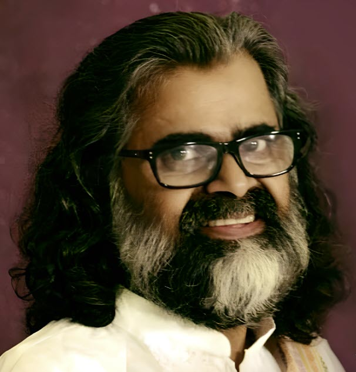
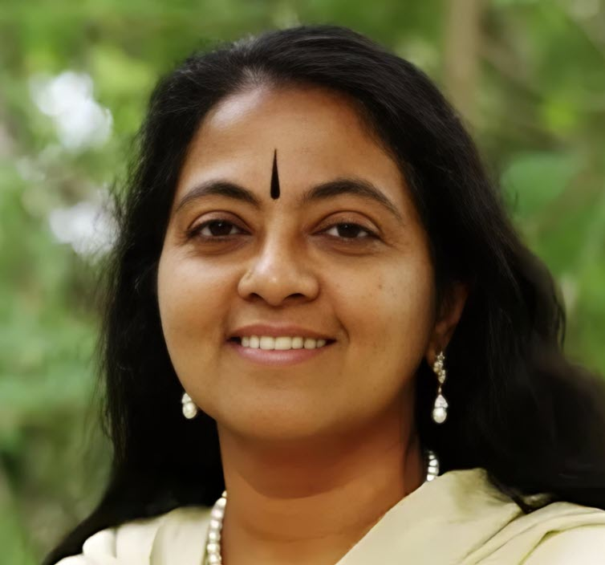

Ayurveda • Music • Meditation • Holistic Healing
This website shares the life and work of Dr. (Vaidya) Manikantan and Dr. Nisha Manikantan — two visionary Ayurvedic physicians and Art of Living teachers who have dedicated their lives to restoring health, harmony, and happiness across the world.
From their home at the Art of Living International Center in Bengaluru, India, they have trained thousands of students and doctors, touching lives through the ancient wisdom of Ayurveda, the power of music, and the depth of meditation.

Ayurvedic physician, musician, and co-founder of Sri Sri Ayurveda. Known for his soulful bhajans like Sundaranana and Hari Sundara, he integrates music and Ayurveda into a unique approach to healing and harmony.

Ayurvedic physician, author, and Chief Consultant for Integrated Cancer & Diabetes Care at the Sri Sri College of Ayurvedic Science and Research. She co-founded the Sri Sri Ayurveda Hospital and specializes in Nadi Pareeksha, Marma Therapy, and Ayurveda-based wellness for modern lifestyles.
Their global programs include Nadi Pareeksha consultations, Marma Healing workshops, and Self-Healing courses. Drs. Nisha and Manikantan have taught across more than 30 countries, inspiring doctors, leaders, and individuals to live with awareness and balance.
Contact for Programs